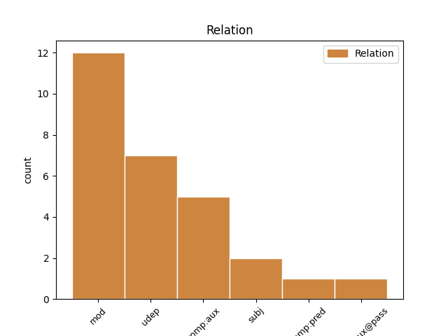

Distribution of features within this leaf

Agreement Rules sorted by frequency.
- When the dependent token is the modifer(mod) of the head token, and the head token is AUX and the dependent token is AUX.
1 कयास _ _ _ _ 0 _ _ _
2 लगाए _ _ _ _ 0 _ _ _
3 जा _ _ _ _ 0 _ _ _
4 रहे _ _ _ _ 0 _ _ _
5 हैं है AUX VAUX Mood=Ind|Number=Plur|Person=3|Tense=Pres|VerbForm=Fin 0 _ _ _
6 हिमाचल _ _ _ _ 0 _ _ _
7 प्रदेश _ _ _ _ 0 _ _ _
8 से _ _ _ _ 0 _ _ _
9 आनंद _ _ _ _ 0 _ _ _
10 शर्मा _ _ _ _ 0 _ _ _
11 को _ _ _ _ 0 _ _ _
12 केंद्रीय _ _ _ _ 0 _ _ _
13 राज्य _ _ _ _ 0 _ _ _
14 मंत्री _ _ _ _ 0 _ _ _
15 का _ _ _ _ 0 _ _ _
16 दर्जा _ _ _ _ 0 _ _ _
17 दिया _ _ _ _ 0 _ _ _
18 जा _ _ _ _ 0 _ _ _
19 सकता _ _ _ _ 0 _ _ _
20 है है AUX VAUX Mood=Ind|Number=Sing|Person=3|Tense=Pres|VerbForm=Fin 5 mod _ ChunkId=VGF2|ChunkType=child|Tam=hE|Translit=hai|Vib=है
21 । _ _ _ _ 0 _ _ _
1 माता _ _ _ _ 0 _ _ _
2 - _ _ _ _ 0 _ _ _
3 पिता _ _ _ _ 0 _ _ _
4 लाखों _ _ _ _ 0 _ _ _
5 रुपये _ _ _ _ 0 _ _ _
6 खर्च _ _ _ _ 0 _ _ _
7 कर _ _ _ _ 0 _ _ _
8 बच्चों _ _ _ _ 0 _ _ _
9 को _ _ _ _ 0 _ _ _
10 मेडिकल _ _ _ _ 0 _ _ _
11 कालेज _ _ _ _ 0 _ _ _
12 में _ _ _ _ 0 _ _ _
13 प्रवेश _ _ _ _ 0 _ _ _
14 तो _ _ _ _ 0 _ _ _
15 दिला _ _ _ _ 0 _ _ _
16 देते _ _ _ _ 0 _ _ _
17 हैं _ _ _ _ 0 _ _ _
18 , _ _ _ _ 0 _ _ _
19 लेकिन _ _ _ _ 0 _ _ _
20 क्या _ _ _ _ 0 _ _ _
21 वह _ _ _ _ 0 _ _ _
22 सही _ _ _ _ 0 _ _ _
23 मायने _ _ _ _ 0 _ _ _
24 में _ _ _ _ 0 _ _ _
25 डॉक्टर _ _ _ _ 0 _ _ _
26 बनने _ _ _ _ 0 _ _ _
27 के _ _ _ _ 0 _ _ _
28 काबिल _ _ _ _ 0 _ _ _
29 होते _ _ _ _ 0 _ _ _
30 हैं है AUX VAUX Mood=Ind|Number=Plur|Person=3|Tense=Pres|VerbForm=Fin 0 _ _ _
31 , _ _ _ _ 0 _ _ _
32 यह _ _ _ _ 0 _ _ _
33 सोचने _ _ _ _ 0 _ _ _
34 की _ _ _ _ 0 _ _ _
35 भी _ _ _ _ 0 _ _ _
36 जरूरत _ _ _ _ 0 _ _ _
37 है है AUX VM Mood=Ind|Number=Sing|Person=3|Tense=Pres|VerbForm=Fin|Voice=Act 30 udep _ ChunkId=VGF3|ChunkType=head|Stype=declarative|Tam=hE|Translit=hai|Vib=है
38 । _ _ _ _ 0 _ _ _
1 राज्य _ _ _ _ 0 _ _ _
2 में _ _ _ _ 0 _ _ _
3 पार्टी _ _ _ _ 0 _ _ _
4 को _ _ _ _ 0 _ _ _
5 फिर _ _ _ _ 0 _ _ _
6 से _ _ _ _ 0 _ _ _
7 खड़ा _ _ _ _ 0 _ _ _
8 करने _ _ _ _ 0 _ _ _
9 के _ _ _ _ 0 _ _ _
10 लिए _ _ _ _ 0 _ _ _
11 आडवाणी _ _ _ _ 0 _ _ _
12 किसे _ _ _ _ 0 _ _ _
13 चुनेंगे चुन VERB VM Gender=Masc|Mood=Ind|Number=Sing|Person=3|Polite=Form|Tense=Fut|VerbForm=Fin|Voice=Act 16 mod _ ChunkId=VGF|ChunkType=head|Stype=declarative|Tam=gA|Translit=cuneṁge|Vib=गा
14 इससे _ _ _ _ 0 _ _ _
15 पता _ _ _ _ 0 _ _ _
16 चलेगा चल VERB VM Gender=Masc|Mood=Ind|Number=Sing|Person=3|Tense=Fut|VerbForm=Fin|Voice=Act 0 _ _ _
17 कि _ _ _ _ 0 _ _ _
18 हाल _ _ _ _ 0 _ _ _
19 के _ _ _ _ 0 _ _ _
20 घटनाक्रम _ _ _ _ 0 _ _ _
21 में _ _ _ _ 0 _ _ _
22 विभिन्न _ _ _ _ 0 _ _ _
23 नेताओं _ _ _ _ 0 _ _ _
24 की _ _ _ _ 0 _ _ _
25 भूमिका _ _ _ _ 0 _ _ _
26 को _ _ _ _ 0 _ _ _
27 उन्होंने _ _ _ _ 0 _ _ _
28 किस _ _ _ _ 0 _ _ _
29 तरह _ _ _ _ 0 _ _ _
30 लिया _ _ _ _ 0 _ _ _
31 है _ _ _ _ 0 _ _ _
32 । _ _ _ _ 0 _ _ _
1 बैठक _ _ _ _ 0 _ _ _
2 के _ _ _ _ 0 _ _ _
3 दौरान _ _ _ _ 0 _ _ _
4 श्रीलंका _ _ _ _ 0 _ _ _
5 की _ _ _ _ 0 _ _ _
6 तरफ़ _ _ _ _ 0 _ _ _
7 से _ _ _ _ 0 _ _ _
8 विदेश _ _ _ _ 0 _ _ _
9 मंत्री _ _ _ _ 0 _ _ _
10 लक्षमण _ _ _ _ 0 _ _ _
11 कादिरगमार _ _ _ _ 0 _ _ _
12 और _ _ _ _ 0 _ _ _
13 भारत _ _ _ _ 0 _ _ _
14 में _ _ _ _ 0 _ _ _
15 श्रीलंका _ _ _ _ 0 _ _ _
16 के _ _ _ _ 0 _ _ _
17 उच्चायुक्त _ _ _ _ 0 _ _ _
18 मंगल _ _ _ _ 0 _ _ _
19 मूनसिंघे _ _ _ _ 0 _ _ _
20 शामिल _ _ _ _ 0 _ _ _
21 थे था VERB VM Gender=Masc|Mood=Ind|Number=Plur|Tense=Past|VerbForm=Fin|Voice=Act 0 _ _ _
22 जबकि _ _ _ _ 0 _ _ _
23 मनमोहन _ _ _ _ 0 _ _ _
24 सिंह _ _ _ _ 0 _ _ _
25 के _ _ _ _ 0 _ _ _
26 साथ _ _ _ _ 0 _ _ _
27 विदेश _ _ _ _ 0 _ _ _
28 मंत्री _ _ _ _ 0 _ _ _
29 नटवर _ _ _ _ 0 _ _ _
30 सिंह _ _ _ _ 0 _ _ _
31 , _ _ _ _ 0 _ _ _
32 सुरक्षा _ _ _ _ 0 _ _ _
33 सलाहकार _ _ _ _ 0 _ _ _
34 जे. _ _ _ _ 0 _ _ _
35 एन. _ _ _ _ 0 _ _ _
36 दीक्षित _ _ _ _ 0 _ _ _
37 और _ _ _ _ 0 _ _ _
38 श्रीलंका _ _ _ _ 0 _ _ _
39 में _ _ _ _ 0 _ _ _
40 भारत _ _ _ _ 0 _ _ _
41 की _ _ _ _ 0 _ _ _
42 उच्चायुक्त _ _ _ _ 0 _ _ _
43 निरुपमा _ _ _ _ 0 _ _ _
44 राव _ _ _ _ 0 _ _ _
45 थे था AUX VM Gender=Masc|Mood=Ind|Number=Plur|Tense=Past|VerbForm=Fin|Voice=Act 21 udep _ ChunkId=VGF2|ChunkType=head|Stype=declarative|Tam=WA|Translit=the|Vib=था
46 । _ _ _ _ 0 _ _ _
1 इस _ _ _ _ 0 _ _ _
2 मामले _ _ _ _ 0 _ _ _
3 में _ _ _ _ 0 _ _ _
4 क्या _ _ _ _ 0 _ _ _
5 कार्रवाई _ _ _ _ 0 _ _ _
6 होगी हो VERB VM Gender=Fem|Mood=Ind|Number=Sing|Person=3|Tense=Fut|VerbForm=Fin|Voice=Act 0 _ _ _
7 यह _ _ _ _ 0 _ _ _
8 बात _ _ _ _ 0 _ _ _
9 गुजरात _ _ _ _ 0 _ _ _
10 हाईकोर्ट _ _ _ _ 0 _ _ _
11 की _ _ _ _ 0 _ _ _
12 बृहस्पतिवार _ _ _ _ 0 _ _ _
13 को _ _ _ _ 0 _ _ _
14 होने _ _ _ _ 0 _ _ _
15 वाली _ _ _ _ 0 _ _ _
16 सुनवाई _ _ _ _ 0 _ _ _
17 के _ _ _ _ 0 _ _ _
18 बाद _ _ _ _ 0 _ _ _
19 ही _ _ _ _ 0 _ _ _
20 सामने _ _ _ _ 0 _ _ _
21 आ _ _ _ _ 0 _ _ _
22 पाएगी पा AUX VAUX Gender=Fem|Mood=Ind|Number=Sing|Person=3|Tense=Fut|VerbForm=Fin 6 comp:pred _ ChunkId=VGF2|ChunkType=child|Tam=gA|Translit=pāegī|Vib=गा
23 । _ _ _ _ 0 _ _ _
1 पाकिस्तान _ _ _ _ 0 _ _ _
2 के _ _ _ _ 0 _ _ _
3 राष्ट्रपति _ _ _ _ 0 _ _ _
4 परवेज _ _ _ _ 0 _ _ _
5 मुशर्रफ _ _ _ _ 0 _ _ _
6 ने _ _ _ _ 0 _ _ _
7 कहा _ _ _ _ 0 _ _ _
8 कि _ _ _ _ 0 _ _ _
9 सेना _ _ _ _ 0 _ _ _
10 बैरक _ _ _ _ 0 _ _ _
11 में _ _ _ _ 0 _ _ _
12 ही _ _ _ _ 0 _ _ _
13 है है AUX VM Mood=Ind|Number=Sing|Person=3|Tense=Pres|VerbForm=Fin|Voice=Act 0 _ _ _
14 सिर्फ _ _ _ _ 0 _ _ _
15 वे _ _ _ _ 0 _ _ _
16 सरकार _ _ _ _ 0 _ _ _
17 को _ _ _ _ 0 _ _ _
18 समर्थन _ _ _ _ 0 _ _ _
19 व _ _ _ _ 0 _ _ _
20 दिशा _ _ _ _ 0 _ _ _
21 निर्देश _ _ _ _ 0 _ _ _
22 देने _ _ _ _ 0 _ _ _
23 के _ _ _ _ 0 _ _ _
24 लिए _ _ _ _ 0 _ _ _
25 बाहर _ _ _ _ 0 _ _ _
26 हैं है VERB VM Mood=Ind|Number=Sing|Person=3|Polite=Form|Tense=Pres|VerbForm=Fin|Voice=Act 13 mod _ ChunkId=VGF3|ChunkType=head|Stype=declarative|Tam=hE|Translit=haiṁ|Vib=है
27 । _ _ _ _ 0 _ _ _
Disagree Examples:
1 यहाँ _ _ _ _ 0 _ _ _
2 की _ _ _ _ 0 _ _ _
3 गलियों _ _ _ _ 0 _ _ _
4 में _ _ _ _ 0 _ _ _
5 भटकते _ _ _ _ 0 _ _ _
6 हुए _ _ _ _ 0 _ _ _
7 आपको _ _ _ _ 0 _ _ _
8 महसूस _ _ _ _ 0 _ _ _
9 होगा हो VERB VM Gender=Masc|Mood=Ind|Number=Sing|Person=3|Tense=Fut|VerbForm=Fin|Voice=Act 0 _ _ _
10 फ्रेंच _ _ _ _ 0 _ _ _
11 लोगों _ _ _ _ 0 _ _ _
12 का _ _ _ _ 0 _ _ _
13 पूरा _ _ _ _ 0 _ _ _
14 जीवन _ _ _ _ 0 _ _ _
15 कला _ _ _ _ 0 _ _ _
16 के _ _ _ _ 0 _ _ _
17 लिए _ _ _ _ 0 _ _ _
18 समर्पित _ _ _ _ 0 _ _ _
19 है है AUX VM Mood=Ind|Number=Sing|Person=3|Tense=Pres|VerbForm=Fin|Voice=Act 9 subj _ ChunkId=VGF2|ChunkType=head|Stype=declarative|Tam=hE|Translit=hai|Vib=है
20 । _ _ _ _ 0 _ _ _
1 उमा _ _ _ _ 0 _ _ _
2 भारती _ _ _ _ 0 _ _ _
3 के _ _ _ _ 0 _ _ _
4 ऊपर _ _ _ _ 0 _ _ _
5 १० _ _ _ _ 0 _ _ _
6 साल _ _ _ _ 0 _ _ _
7 पहले _ _ _ _ 0 _ _ _
8 लगा _ _ _ _ 0 _ _ _
9 हत्या _ _ _ _ 0 _ _ _
10 के _ _ _ _ 0 _ _ _
11 प्रयास _ _ _ _ 0 _ _ _
12 व _ _ _ _ 0 _ _ _
13 दंगे _ _ _ _ 0 _ _ _
14 का _ _ _ _ 0 _ _ _
15 मामला _ _ _ _ 0 _ _ _
16 हटाने _ _ _ _ 0 _ _ _
17 के _ _ _ _ 0 _ _ _
18 लिए _ _ _ _ 0 _ _ _
19 स्थानीय _ _ _ _ 0 _ _ _
20 अदालत _ _ _ _ 0 _ _ _
21 ने _ _ _ _ 0 _ _ _
22 सरकारी _ _ _ _ 0 _ _ _
23 वकील _ _ _ _ 0 _ _ _
24 से _ _ _ _ 0 _ _ _
25 लिखित _ _ _ _ 0 _ _ _
26 अनुरोध _ _ _ _ 0 _ _ _
27 मांगा मांग VERB VM Gender=Masc|Mood=Ind|Number=Sing|Person=3|Tense=Fut|VerbForm=Fin|Voice=Act 28 comp:aux _ ChunkId=VGF|ChunkType=head|Stype=declarative|Tam=gA|Translit=māṁgā|Vib=गा_है
28 है है AUX VAUX Mood=Ind|Number=Sing|Person=3|Tense=Pres|VerbForm=Fin 0 _ _ _
29 . _ _ _ _ 0 _ _ _
1 इसके _ _ _ _ 0 _ _ _
2 बावजूद _ _ _ _ 0 _ _ _
3 जस्टिस _ _ _ _ 0 _ _ _
4 यू. _ _ _ _ 0 _ _ _
5 सी. _ _ _ _ 0 _ _ _
6 बनर्जी _ _ _ _ 0 _ _ _
7 की _ _ _ _ 0 _ _ _
8 अध्यक्षता _ _ _ _ 0 _ _ _
9 में _ _ _ _ 0 _ _ _
10 एक _ _ _ _ 0 _ _ _
11 उच्चस्तरीय _ _ _ _ 0 _ _ _
12 समिति _ _ _ _ 0 _ _ _
13 का _ _ _ _ 0 _ _ _
14 गठन _ _ _ _ 0 _ _ _
15 करना _ _ _ _ 0 _ _ _
16 और _ _ _ _ 0 _ _ _
17 उसे _ _ _ _ 0 _ _ _
18 इस _ _ _ _ 0 _ _ _
19 बात _ _ _ _ 0 _ _ _
20 का _ _ _ _ 0 _ _ _
21 पता _ _ _ _ 0 _ _ _
22 लगाने _ _ _ _ 0 _ _ _
23 के _ _ _ _ 0 _ _ _
24 लिए _ _ _ _ 0 _ _ _
25 कहना _ _ _ _ 0 _ _ _
26 है _ _ _ _ 0 _ _ _
27 कि _ _ _ _ 0 _ _ _
28 ( _ _ _ _ 0 _ _ _
29 साबरमती _ _ _ _ 0 _ _ _
30 एक्सप्रेस _ _ _ _ 0 _ _ _
31 के _ _ _ _ 0 _ _ _
32 कोच _ _ _ _ 0 _ _ _
33 संख्या _ _ _ _ 0 _ _ _
34 एस _ _ _ _ 0 _ _ _
35 - _ _ _ _ 0 _ _ _
36 ६ _ _ _ _ 0 _ _ _
37 में _ _ _ _ 0 _ _ _
38 भीड़ _ _ _ _ 0 _ _ _
39 क्यों _ _ _ _ 0 _ _ _
40 थी था AUX VM Gender=Fem|Mood=Ind|Number=Sing|Tense=Past|VerbForm=Fin|Voice=Act 69 subj _ ChunkId=VGF2|ChunkType=head|SpaceAfter=No|Stype=declarative|Tam=WA|Translit=thī|Vib=था
41 , _ _ _ _ 0 _ _ _
42 इनमें _ _ _ _ 0 _ _ _
43 से _ _ _ _ 0 _ _ _
44 अधिकांश _ _ _ _ 0 _ _ _
45 लोग _ _ _ _ 0 _ _ _
46 बेटिकट _ _ _ _ 0 _ _ _
47 क्यों _ _ _ _ 0 _ _ _
48 थे _ _ _ _ 0 _ _ _
49 , _ _ _ _ 0 _ _ _
50 और _ _ _ _ 0 _ _ _
51 इन _ _ _ _ 0 _ _ _
52 रेलयात्रियों _ _ _ _ 0 _ _ _
53 के _ _ _ _ 0 _ _ _
54 व्यवहार _ _ _ _ 0 _ _ _
55 ने _ _ _ _ 0 _ _ _
56 आग _ _ _ _ 0 _ _ _
57 की _ _ _ _ 0 _ _ _
58 घटना _ _ _ _ 0 _ _ _
59 को _ _ _ _ 0 _ _ _
60 किस _ _ _ _ 0 _ _ _
61 प्रकार _ _ _ _ 0 _ _ _
62 हवा _ _ _ _ 0 _ _ _
63 दी _ _ _ _ 0 _ _ _
64 ) _ _ _ _ 0 _ _ _
65 अपने _ _ _ _ 0 _ _ _
66 आप _ _ _ _ 0 _ _ _
67 में _ _ _ _ 0 _ _ _
68 शर्मनाक _ _ _ _ 0 _ _ _
69 है है AUX VM Mood=Ind|Number=Sing|Person=3|Tense=Pres|VerbForm=Fin|Voice=Act 0 _ _ _
70 । _ _ _ _ 0 _ _ _
1 मीडिया _ _ _ _ 0 _ _ _
2 रिपोर्टो _ _ _ _ 0 _ _ _
3 में _ _ _ _ 0 _ _ _
4 कहा _ _ _ _ 0 _ _ _
5 जा _ _ _ _ 0 _ _ _
6 रहा _ _ _ _ 0 _ _ _
7 है _ _ _ _ 0 _ _ _
8 कि _ _ _ _ 0 _ _ _
9 रिलायंस _ _ _ _ 0 _ _ _
10 कैपिटल _ _ _ _ 0 _ _ _
11 किसके _ _ _ _ 0 _ _ _
12 हिस्से _ _ _ _ 0 _ _ _
13 में _ _ _ _ 0 _ _ _
14 जाएगा जा VERB VM Gender=Masc|Mood=Ind|Number=Sing|Person=3|Tense=Fut|VerbForm=Fin|Voice=Act 0 _ _ _
15 , _ _ _ _ 0 _ _ _
16 इसको _ _ _ _ 0 _ _ _
17 लेकर _ _ _ _ 0 _ _ _
18 भ्रम _ _ _ _ 0 _ _ _
19 की _ _ _ _ 0 _ _ _
20 स्थिति _ _ _ _ 0 _ _ _
21 है है AUX VM Mood=Ind|Number=Sing|Person=3|Tense=Pres|VerbForm=Fin|Voice=Act 14 udep _ ChunkId=VGF3|ChunkType=head|SpaceAfter=No|Stype=declarative|Tam=hE|Translit=hai|Vib=है
22 , _ _ _ _ 0 _ _ _
23 लेकिन _ _ _ _ 0 _ _ _
24 सूत्रों _ _ _ _ 0 _ _ _
25 ने _ _ _ _ 0 _ _ _
26 संकेत _ _ _ _ 0 _ _ _
27 दिया _ _ _ _ 0 _ _ _
28 है _ _ _ _ 0 _ _ _
29 कि _ _ _ _ 0 _ _ _
30 यह _ _ _ _ 0 _ _ _
31 कंपनी _ _ _ _ 0 _ _ _
32 अनिल _ _ _ _ 0 _ _ _
33 के _ _ _ _ 0 _ _ _
34 हिस्से _ _ _ _ 0 _ _ _
35 में _ _ _ _ 0 _ _ _
36 जा _ _ _ _ 0 _ _ _
37 सकती _ _ _ _ 0 _ _ _
38 है _ _ _ _ 0 _ _ _
39 । _ _ _ _ 0 _ _ _
1 तब _ _ _ _ 0 _ _ _
2 यह _ _ _ _ 0 _ _ _
3 भी _ _ _ _ 0 _ _ _
4 खबर _ _ _ _ 0 _ _ _
5 आई _ _ _ _ 0 _ _ _
6 थी _ _ _ _ 0 _ _ _
7 कि _ _ _ _ 0 _ _ _
8 करिश्मा _ _ _ _ 0 _ _ _
9 ने _ _ _ _ 0 _ _ _
10 तलाक _ _ _ _ 0 _ _ _
11 के _ _ _ _ 0 _ _ _
12 पेपर _ _ _ _ 0 _ _ _
13 पर _ _ _ _ 0 _ _ _
14 दस्तखत _ _ _ _ 0 _ _ _
15 करने _ _ _ _ 0 _ _ _
16 के _ _ _ _ 0 _ _ _
17 एवज _ _ _ _ 0 _ _ _
18 में _ _ _ _ 0 _ _ _
19 संजय _ _ _ _ 0 _ _ _
20 से _ _ _ _ 0 _ _ _
21 ७ _ _ _ _ 0 _ _ _
22 करोड़ _ _ _ _ 0 _ _ _
23 रुपये _ _ _ _ 0 _ _ _
24 मांगे मांग VERB VM Gender=Masc|Mood=Ind|Number=Plur|Tense=Fut|VerbForm=Fin|Voice=Act 25 comp:aux _ ChunkId=VGF2|ChunkType=head|Stype=declarative|Tam=gA|Translit=māṁge|Vib=गा_था
25 थे था AUX VAUX Gender=Masc|Mood=Ind|Number=Plur|Tense=Past|VerbForm=Fin 0 _ _ _
26 । _ _ _ _ 0 _ _ _